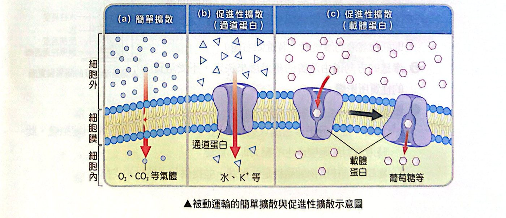
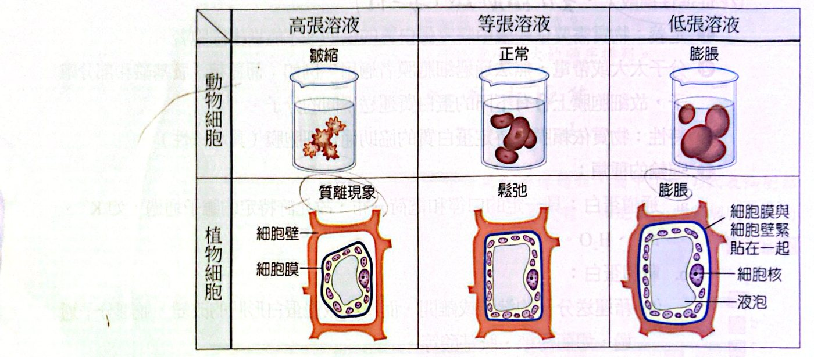
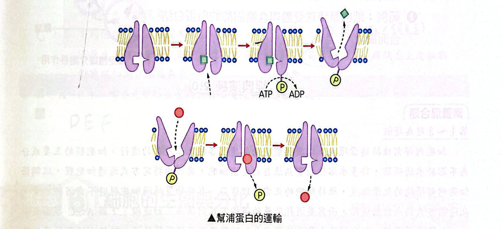
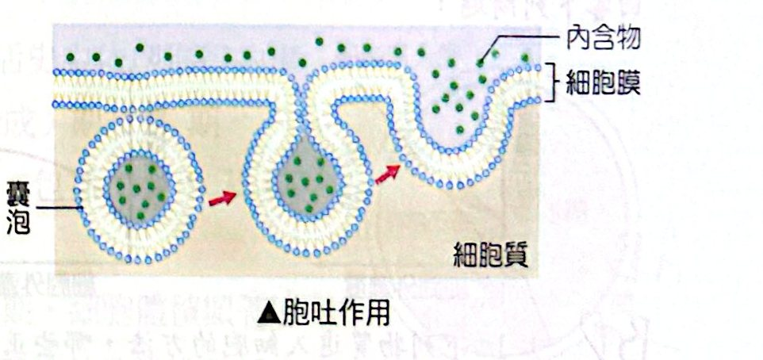
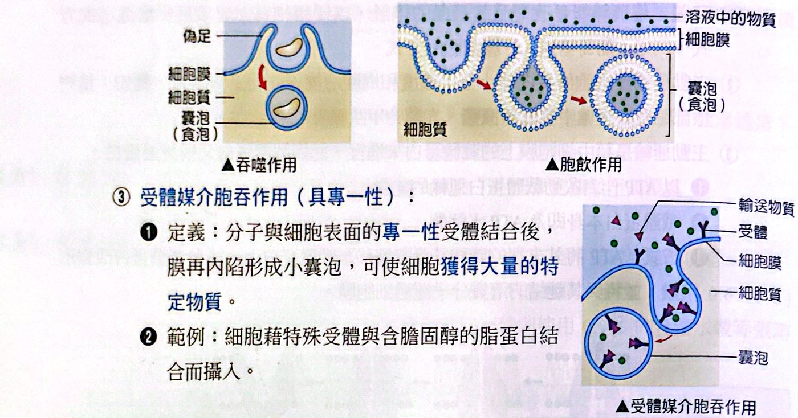

一張圖記住：物質怎麼進出細胞？
細胞膜是「選擇性通透膜」，不是什麼都能過。物質要進出細胞，先問兩件事：分子大還是小？要不要花能量？
| 大類 |
方式 |
耗能？ |
需要膜蛋白？ |
方向／特性 |
| 小分子（被動運輸） |
簡單擴散 |
否 |
否（直接穿過雙層磷脂） |
順濃度梯度；不具專一性 |
| 小分子（被動運輸） |
促進性擴散（通道蛋白、載體蛋白） |
否 |
是 |
順濃度梯度；具專一性；載體蛋白有飽和現象 |
| 小分子 |
主動運輸 |
耗能（ATP） |
載體蛋白（幫浦蛋白） |
逆濃度梯度 |
| 大分子 |
胞吐作用 |
耗能 |
靠囊泡 |
內容物排出細胞 |
| 大分子 |
胞吞作用：吞噬、胞飲、受體媒介胞吞 |
耗能 |
靠囊泡 |
攝入細胞 |

簡單擴散與促進性擴散（通道蛋白、載體蛋白）
被動運輸：擴散與滲透
簡單擴散：物質不需依賴膜蛋白協助就能進出細胞，直接通過雙層磷脂（不具專一性）。
- 非極性的小分子或氣體：O₂、CO₂；
- 極性但未帶電的小分子：乙醇、H₂O。
促進性擴散：分子太大或帶電，無法通過磷脂雙層，要靠膜中特定蛋白質幫忙（具專一性），如葡萄糖、胺基酸和部分離子。
- 通道蛋白：有一定口徑和電荷分布，允許特定離子通過，如 K⁺、Na⁺、H₂O；
- 載體蛋白：靠與分子結合／離開而改變形狀，讓分子通過，如葡萄糖、胺基酸；有飽和現象，所以運輸速率有最高值。
滲透作用：水分子通過選擇性通透膜的擴散（包括簡單擴散及促進性擴散）。水從低張（濃度低）處擴散到高張（濃度高）處。
| 溶液 |
動物細胞（如紅血球） |
植物細胞 |
| 高張（外面濃度高） |
水流出 → 皺縮 |
質離現象（細胞膜與細胞壁分離） |
| 等張 |
正常 |
鬆弛 |
| 低張（外面濃度低） |
水流入 → 膨脹（可能破裂） |
膨脹（有細胞壁，受膨壓支撐，不會破） |
- 不同生物的等張溶液不同：蛙用 0.65% 食鹽水、哺乳動物紅血球用 0.9% 食鹽水。
- 滲透的方向只由溶質的總濃度決定，不受溶質種類影響。
- 膨壓：水滲入植物細胞，液泡膨脹壓迫細胞壁，液泡對細胞壁產生的壓力；能維持細胞形狀，並提供草本植物支撐力。
- 滲透度的測量：在選擇性通透膜袋內裝 5% 蔗糖溶液，袋上連玻璃管，液面達平衡時，水柱產生的淨水壓（h）即蔗糖溶液的滲透度。

動、植物細胞在高張、等張、低張溶液中的變化
主動運輸
定義：藉消耗能量改變載體蛋白的構形，將物質逆著濃度梯度運送。例：葡萄糖進入肝臟細胞；植物根部細胞自土壤吸收無機鹽；人體甲狀腺吸收碘。
- 主動運輸是細胞維持內部小分子濃度和周圍環境不同的主要動力；
- 靠細胞膜上的載體蛋白進行，這類載體蛋白又稱幫浦蛋白：
- 以 ATP 作為能量；載體蛋白本身就是 ATP 水解酶；
- ATP 把末端磷酸基直接轉移到載體蛋白上，使蛋白改變形狀，把與它結合的溶質分子運過細胞膜。

幫浦蛋白的運輸
大分子的運輸：胞吐與胞吞
| 方式 |
定義 |
專一性 |
例子 |
| 胞吐作用 |
囊泡與細胞膜融合，把內容物釋出細胞外 |
— |
胰臟細胞分泌胰島素、分泌蛋白 |
| 吞噬作用 |
細胞以偽足攝入顆粒或固體 |
無專一性 |
變形蟲捕食、白血球吞噬病原體 |
| 胞飲作用 |
細胞以膜內陷方式攝入細胞外液及溶於其中的溶質 |
無專一性 |
成熟卵細胞從周圍營養細胞攝取養分 |
| 受體媒介胞吞 |
分子與細胞表面專一性受體結合後，膜內陷形成小囊泡，獲得大量特定物質 |
具專一性 |
細胞藉特殊受體與含膽固醇的脂蛋白結合而攝入 |
胞吞（細胞膜內陷）＋胞吐（囊泡融合）都要耗能，且都靠膜融合（囊泡與細胞膜）。

胞吐作用

吞噬作用、胞飲作用與受體媒介胞吞作用
經典演練
經典演練 1物質進入細胞的方法・題組 1（106 學測）
細胞內部需維持適當環境，以提供能量的轉變及各種化學反應的進行。細胞膜的主要成分為不溶於水的磷脂，許多水溶性物質無法自由進出細胞，需經由特定方式通過細胞膜，以調節細胞內部環境的化學組成，維持細胞的正常生理作用。有些物質通過細胞膜時不需消耗能量，此運輸方式稱為被動運輸，而需要消耗能量的運輸方式則稱為主動運輸。下圖 A～C 各圖表示在一定濃度範圍內，細胞膜外小分子物質進入細胞膜內的三種不同情況。
下列物質進入細胞的方法，哪些正確？（多選）
(A) 水以滲透作用進入仙人掌之根細胞 (B) 氧經由簡單擴散進入狗之肺泡細胞 (C) 酒精經主動運輸通過人腦細胞之細胞膜 (D) 澱粉由運輸蛋白進入馬鈴薯之塊莖細胞 (E) 碘離子以促進性擴散進入海帶之葉狀體細胞
看答案與詳解收起
答(A)(B)
解
- (A) ○ 水進入根細胞是滲透作用。
- (B) ○ 氧是非極性小分子，簡單擴散進入肺泡細胞。
- (C) ✗ 酒精（乙醇）是小分子，用簡單擴散。
- (D) ✗ 澱粉是大分子，且馬鈴薯塊莖的澱粉是細胞自己用葡萄糖合成並儲存的，不是由運輸蛋白送進去。
- (E) ✗ 海帶體內碘離子濃度遠高於海水，是主動運輸（逆濃度梯度）。
請寫出圖中 A、B、C 所代表的物質運輸方式。（A：運輸速率與細胞外濃度成直線上升；B：運輸速率隨細胞外濃度上升而趨於飽和；C：隨時間，細胞內濃度高過細胞外濃度。）
看答案與詳解收起
答A：簡單擴散；B：促進性擴散；C：主動運輸
解
- A：速率與濃度成正比，沒有飽和 ⇒ 直接穿過磷脂的簡單擴散。
- B：有飽和（載體蛋白數量有限），且順濃度梯度 ⇒ 促進性擴散。
- C：細胞內濃度升到高於細胞外 ⇒ 逆濃度梯度 ⇒ 主動運輸。
承第 2 題，上列三種運輸方式中，哪一種加入呼吸作用的抑制劑後，曲線會發生變化（以代號回答）？為什麼？
看答案與詳解收起
答C（主動運輸）；因為主動運輸需要 ATP，抑制呼吸作用使 ATP 產生不足。
解呼吸作用提供 ATP。只有主動運輸要消耗 ATP，抑制劑使 ATP 減少，C 的細胞內濃度就不能再升高到超過細胞外。簡單擴散（A）與促進性擴散（B）都是被動運輸，不耗能，不受影響。
細胞必須透過細胞膜由外界獲得養分，以維持生命現象，不同的物質進出細胞的方式也不一樣。下圖 A～F 是物質通過細胞膜的方式（依圖判讀——A：直接穿過磷脂；B：通道蛋白；C：載體蛋白；D：偽足包圍顆粒的吞噬；E：膜內陷攝入液體的胞飲；F：囊泡與細胞膜融合釋出物質的胞吐）。
下列有關物質通過細胞膜的說法，何者正確？
(A) 分泌蛋白質的過程需要能量，但不需要細胞膜上的載體蛋白 (B) 小分子物質都是通過簡單擴散進入細胞 (C) 蛋白質等較大的分子只能藉由主動運輸進入細胞 (D) 當物質濃度高於細胞外液濃度時會發生質離現象
看答案與詳解收起
答(A)
解
- (A) ○ 分泌蛋白靠胞吐，耗能但靠囊泡，不需要載體蛋白。
- (B) ✗ 小分子也可能靠促進性擴散或主動運輸（葡萄糖、離子）。
- (C) ✗ 蛋白質等大分子靠胞吞進入，不是主動運輸。
- (D) ✗ 質離現象發生在細胞外液濃度高於細胞內（外面高張）時。
下列何種生理過程沒有發生膜融合？
(A) 原生質體的融合 (B) 受精作用形成受精卵 (C) 葡萄糖進入小腸絨毛上皮細胞 (D) 胰臟細胞分泌胰島素
看答案與詳解收起
答(C)
解
- (A) 原生質體融合：細胞膜融合。 (B) 受精：精卵細胞膜融合。 (D) 分泌胰島素＝胞吐：囊泡與細胞膜融合。
- (C) 葡萄糖進入小腸絨毛上皮細胞靠載體蛋白（促進性擴散或主動運輸），不涉及膜融合。
圖示 A～F 中，哪些是變形蟲有而大腸桿菌沒有的運輸方式？
看答案與詳解收起
答D、E、F
解大腸桿菌是原核生物，沒有膜狀胞器與內膜系統，也不能進行胞吞、胞吐；A（簡單擴散）、B（通道蛋白）、C（載體蛋白）兩者都有。變形蟲是真核生物，能行吞噬（D）、胞飲（E）、胞吐（F）。